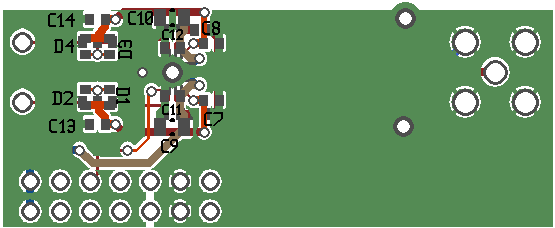
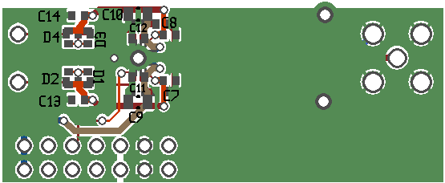

This is an input board for my software defined radio.
A 300Ω input is amplified by a Texas Instruments THS4509 op. amp and passed through a third-order band pass filter, and output to a 50Ω SMA connector.
The initial build will be tuned to the broadcast audio FM band, with a 20db gain, but all going well I'll build variants for different bands.
There's a couple of compromises in the design.
Firstly, I'm doing it on a two layer board, which makes proper impedance matching of the traces impossible. The trace impendance is too high, which means that everything will see a few nH of parasitic inductance.
Secondly, the band-pass filter is after the amplifier. This makes the filter component values more convenient and less sensitive to interferance, but means that the op. amp is potentially swamped by a strong out-of-band signal. This is somewhat ameliorated both by the antennae response, and by the input coupling capacitors giving a high pass filter.